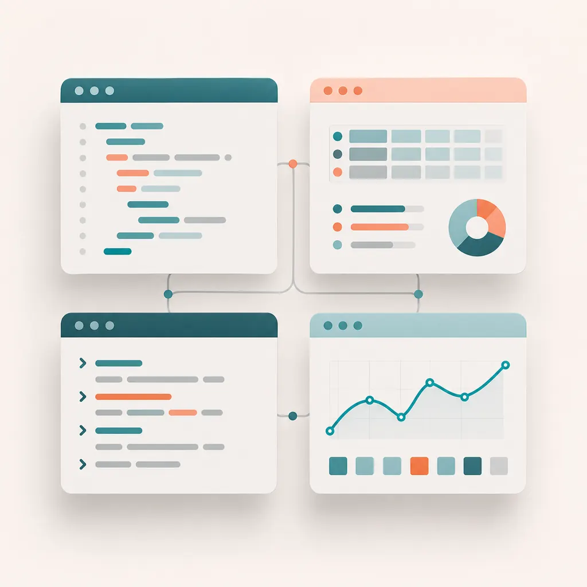

Unidad 2 · Instalacion y primeros comandos

Instalar R y RStudio
R es el motor de calculo. RStudio es la mesa de trabajo. Instalar ambos y abrir un proyecto evita perder archivos, scripts o resultados.
Objetos, vectores y data frames
edad <- c(22, 45, 63, 38)
diagnostico <- c("Control", "Diabetes probable", "Control", "Control")
salud <- data.frame(edad, diagnostico)
str(salud)Paquetes
install.packages("tidyverse")
library(tidyverse)